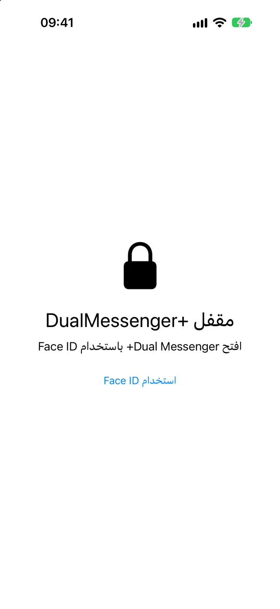
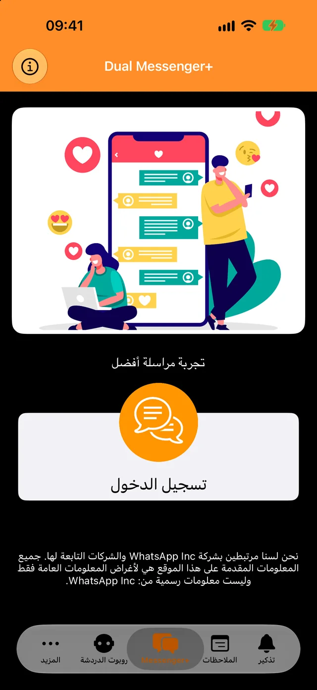
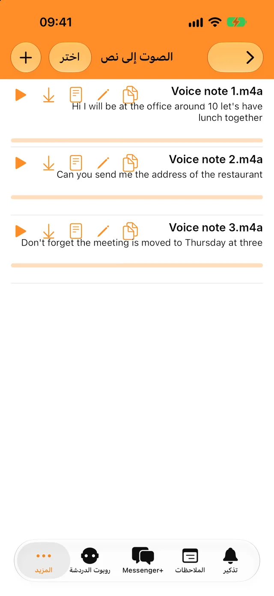
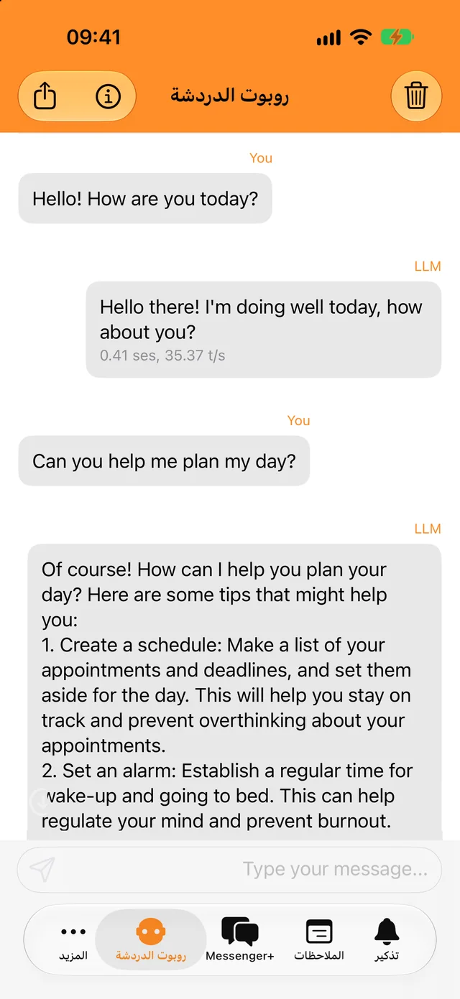
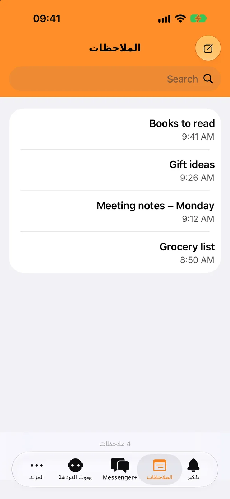

اقفل التطبيق بـ Face ID أو رمز المرور
أنت وحدك من يستطيع فتح التطبيق ومحادثاتك. اختر أن يُقفل فورًا أو بعد بضع دقائق.
أضف حسابك الثاني في ثوانٍ وافصل بين محادثات العمل والمحادثات الشخصية.
التنزيل مجاني. لأجهزة iPhone وiPad وiPhone Duo.

قفل لمحادثاتك وبعض الأدوات اليومية، كلها مدمجة في التطبيق نفسه.

أنت وحدك من يستطيع فتح التطبيق ومحادثاتك. اختر أن يُقفل فورًا أو بعد بضع دقائق.

حوّل الرسائل الصوتية والملفات الصوتية إلى نص بلغتك، ثم انسخه إلى أي مكان.

اطرح أسئلة سريعة حتى بدون إنترنت. محادثاتك مع البوت لا تغادر هاتفك.

دوّن ما تريد، واعثر عليه بالبحث، وسيصلك إشعار عندما يحين موعد التذكير.
ستحتاج إلى الهاتف الذي عليه حسابك الثاني على WhatsApp، للحظات فقط.
اضغط على «تسجيل الدخول». سيظهر رمز QR على الشاشة.
انتقل إلى «الإعدادات»، ثم «الأجهزة المرتبطة»، واضغط على «ربط جهاز».
وجّه ذلك الهاتف نحو رمز QR. ستُفتح محادثاتك في Dual Messenger+.
يُبقيك WhatsApp مسجّل الدخول على الجهاز المرتبط ما دمت تستخدم WhatsApp على هاتفك مرة واحدة على الأقل كل 14 يومًا.
لا يملك Dual Messenger+ خوادم ترى رسائلك. لا يوجد حساب تحتاج إلى إنشائه، والتطبيق خالٍ من الإعلانات وأدوات التتبّع.
تُحفظ الملاحظات والتذكيرات والتسجيلات ومحادثات البوت على جهاز iPhone أو iPad الخاص بك.
لا تعطينا اسمًا ولا عنوان بريد إلكتروني ولا رقم هاتف.
جهازك هو الذي يتولى Face ID وTouch ID. والتطبيق لا يتلقى أي بيانات بيومترية أبدًا.